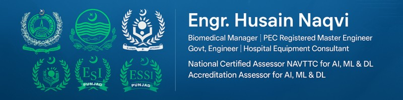

I build medical AI that is tested against published methods, checked on outside data and free for anyone to use.
Hover over the sentence to read it in plain words.
Every tile on the sphere is a real result. Point at it to stop it and preview the project; drag to turn.
Selected projects
Move your cursor over a project to preview its video and graphs. Each one shows what it does, its three main results in plain words and one honest limit. The coloured button opens the live app.
Earlier work
- MS thesis: AI doctor companion that analyses several kinds of medical images and drafts a report
- BSc final project: IoT wearable fetal heart-rate monitor, 2nd of 259 at the Innovation Expo 2022
- AI classifiers for real-time fall detection
- SOP framework for managing hospital equipment
- Nano-biomaterials for controlled fertilizer delivery
- Banknote authentication and stock forecasting with neural networks
- IoT pulse oximeter and IoT home automation
- Brain tumour detection and skull stripping from MRI (MATLAB, 3D Slicer)
Research focus
Three areas I want to keep working on in a PhD or research role. Each one is backed by finished projects above.
Medical image analysis
Classifying, outlining and aligning medical images: X-rays, colonoscopy video, retina photos and 3D MRI and CT.
Projects: fractures, polyps, mouse MRI-CT, diabetic eye disease, pneumonia
Computational oncology and genomics
Using gene activity, mutations and spatial tissue data to describe tumours and predict how patients will do.
Projects: tumour cell maps, immunotherapy response, 14-gene breast cancer test, DNA activity
Trustworthy clinical AI
Models that say how sure they are, are tested on data from another hospital, and report their failures openly.
Used in: calibration, uncertainty, conformal ranges and external tests across the projects
How I work
The same six steps in every project, so the results can be trusted.
- Start from a real clinical question and an open, published dataset
- Split data by patient, so the test is fair
- Compare against published methods on the same data
- Test on a second dataset the model has never seen
- Report what failed as clearly as what worked
- Release a free web app so anyone can try the model
Experience and education
Four years in hospitals and medical equipment, alongside AI assessment and research.
- Jun 2025 to now
Biomedical Engineer (BPS-17), Head of Department
Punjab Employees' Social Security Institution (PESSI), Govt. of Punjab
- Run equipment procurement end to end: specifications, bid evaluation, vendor selection and installation, under PPRA and Punjab Healthcare Commission rules
- Plan medical equipment for special and development projects
- Schedule preventive maintenance; install, calibrate and safety-test equipment in every department
- Write SOPs and train clinical and technical staff
- May 2025 to now
National Certified Assessor in AI, ML and DL (Level 5)
NAVTTC, Govt. of Pakistan, PM Hunarmand Pakistan programme
- Assess AI trainees nationwide in neural networks, deep learning, NLP and computer vision
- Score real AI projects against the national qualifications framework (NVQF), and review AI curricula
- Jan 2023 to now
Biomedical Engineer and Product Specialist
Hoora Pharma (Pvt.) Ltd., distributor of GE Healthcare, Lahore
- Prepared technical and financial comparisons of ultrasound and echocardiography systems for tenders
- Demonstrated equipment to senior doctors; GE Healthcare Innovation Trail-Blazers award, 2023
- Feb to Nov 2022
Biomedical Engineer
Saarf Medical Solutions, Lahore
- Installed, repaired and calibrated ventilators, anaesthesia machines, monitors, incubators and ICU beds; trained ICU nurses
- Jun to Aug 2019
Trainee Biomedical Engineer
Lahore General Hospital
- Maintained ICU and ward equipment; kept inventory and service records
MS Biomedical Engineering
Riphah International University, 2024 to 2026, grade A
Thesis: AI doctor companion for multi-modality medical image analysis and automated report generation
BSc Biomedical Engineering
UET Lahore, 2018 to 2022
Registered engineer, Pakistan Engineering Council (BIOMEDICAL/002739). IELTS 2026: B2.
Skills
Awards and leadership
- 2nd of 259 projects, All Punjab Universities Innovation Expo 2022
- Innovation Trail-Blazers, GE Healthcare, 2023
- Delivered 50+ workshops
- Director Operations, Engineering in Medicine & Biology Society, UET (2022)
- Vice President, Blood Donor Society (2022)
